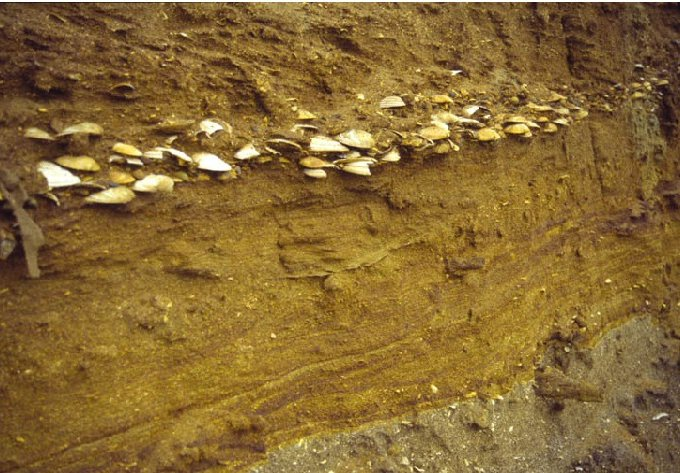

Запретная археология Всемирный Потоп
Библия очень точно рассказывает нам о всемирном потопе, который уничтожил все человечество, но в мире, к сожалению, нет ни единого факта, подтверждающего написанное в Библии. Библия гласит, что кроме Ноя и его семьи никто не остался в живых (БЫТИЕ, главы 6-8). У более чем ста народностей по всему миру имеются рассказы об огромном катастрофическом наводнении, но это принято считать лишь фольклором и выдумками, так как нет никаких подтверждений о потопе, покрывшем всю землю: греки передают историю потопа Декалиона, являющуюся мифом; сегодня рассказы о потопе по-прежнему передаются из поколения в поколение, но каждое поколение, как это принято в обществе, немного эту историю приукрашает. Первоисточник гласит, что просто пошёл грибной дождь. Далее, с ходом лет, эта история обрастала чем могла: грибной дождь мутировал в ливень, а тот в потоп. Из неоткуда появился ковчег. Житель иорднаской долины Ной захотел увековечить своё имя и приписал его к этой истории, рассказывая всем, кому мог, о том, что на самом деле существовала реальная опасность истрибления человечества и только лишь мудрец Ной мог всег спасти, построив ковчег. Но очевидно, что простой рабочий, не имеющий образования, не мог построить ковчег. Помимо этих исторических изложений, нам нужно учитывать следующее в качестве аргументов в пользу невозможности этой истории: наукой доказано, что вода в атмосфере Земли постоянно циркулирует, следовательно объём воды, покрывающий практически всю поверхность земного шара, не мог просто взять и испариться в космос. Конечно можно предположить, что Земля плоская и вода просто упала с неё, но давайте не будем вдаваться в схоластику, все мы понимаем, что это бред. Верующие люди могут прибегнуть к факту о том , что высоко в горах можно найти многочисленные окаменелости ракушек и рыб (наприм., зубы акулы были обнаружены в Карпатах в Центральной Европе, а также окаменелости рыб рядом с вершиной горы Эверест).

Да, действительно, в горах можно найти подобные вещи, но оказались они там вовсе не по причине всемирного потопа. Причиной их появления там является тектоническая активность: ранее территория была ниже уровня моря, но движение и трение тектонических плит могли поднять океаническое дно выше уровня моря. Горы могли образоваться позднее, вследствие дальнейшей тектонической активности. Вот почему морские ракушки обнаруживаются преимущественно в средине пород, а не на породах, будто они были там просто отложены. Они были отложены в подводных слоях, главным образом, ещё до того, как горы стали горами.


В сентябре 1960г. журнал «Life Magazine» опубликовал фотографию «кораблеподобного» объекта на горах Арарата. Американский археолог Рональд Е. Уайатт поехал на это место в 1977г., и в течение его последующих 24 поездок он обнаружил много предметов, которые подтверждают, что это - настоящий Ноев Ковчег. Вот некоторые факты: обнаруженный объект имеет форму лодки, с заостренным носом и закругленной кормой, это не природный камень или образование лавы. У него точно такая же длина, как и указано в библейском описании: 515 футов или 300 египетских локтей (БЫТИЕ 6:15). Но спустя 23 года вышеупомянутый журнал выразил свои извинения перед всеми, кого он вводил в эту иллюзию, ведь археолог оказался мошенником. Рональд выдавал изготовленные им предметы за найденные на горах, за что и был представлен к суду как за фальсификация и ложь в национальных масштабах. Журнал, не справившись с критикой и ненавистью, был вынужден перестать публиковать.

Рядом были найдены древние гончарные круги, на которых изображен Ной, вороны и рыбы. В древние времена жители близлежащей деревни создавали эти поделки для продажи посетителям местности, ведь согласно истории, упомянутой в первом параграфе статьи, ковчег должен был находиться именно на этой местности.